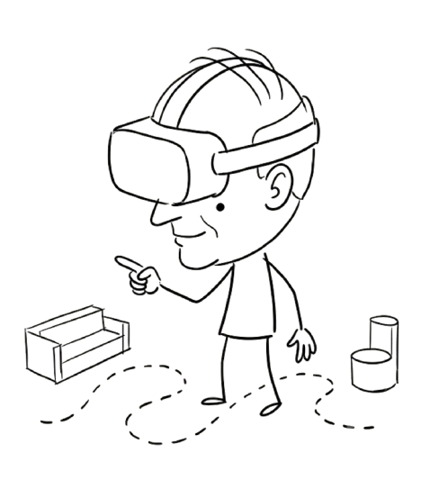
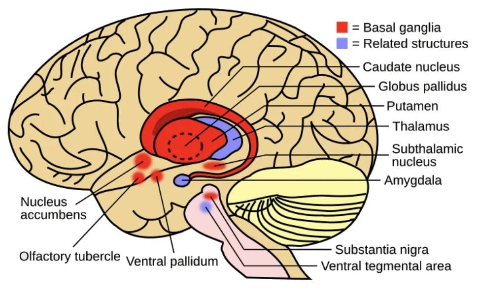
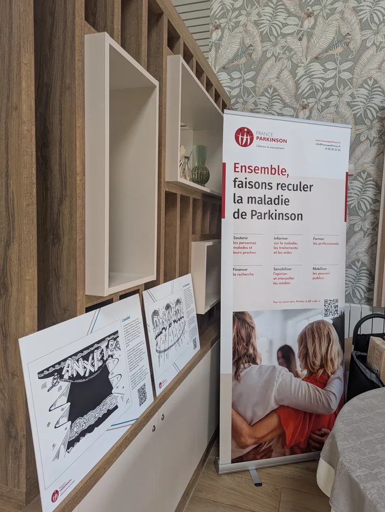
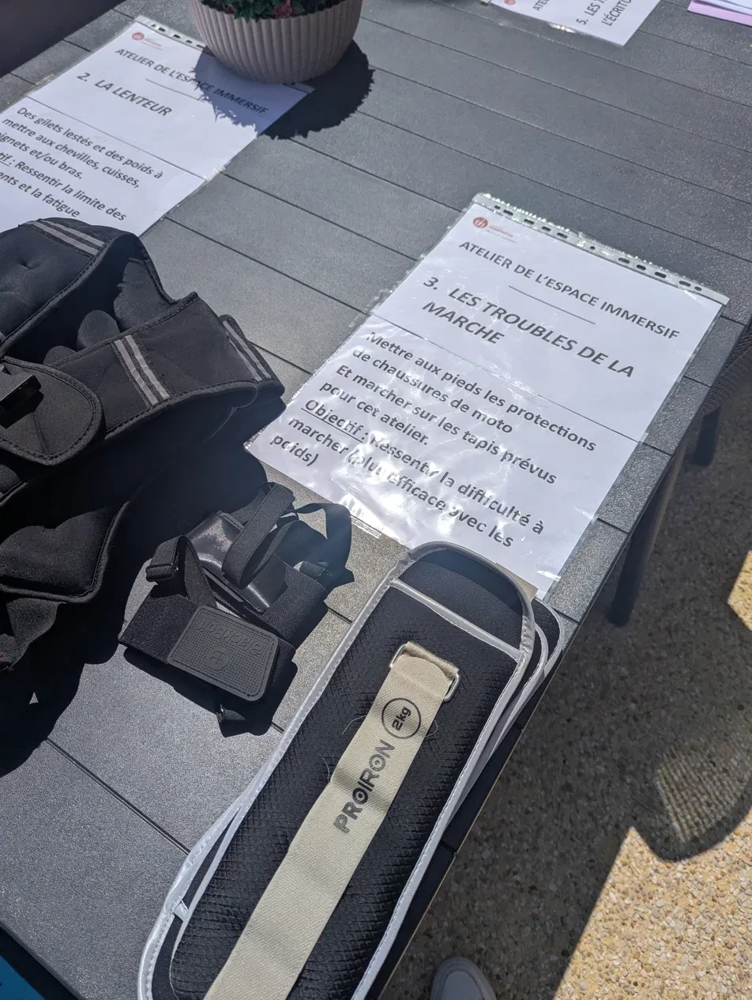
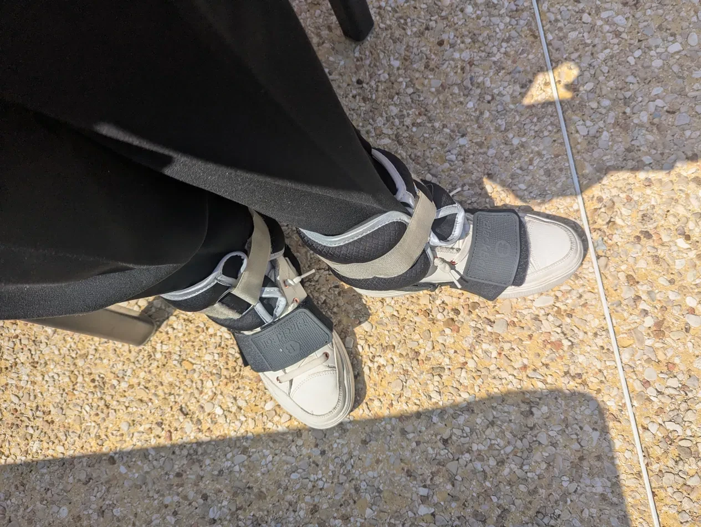
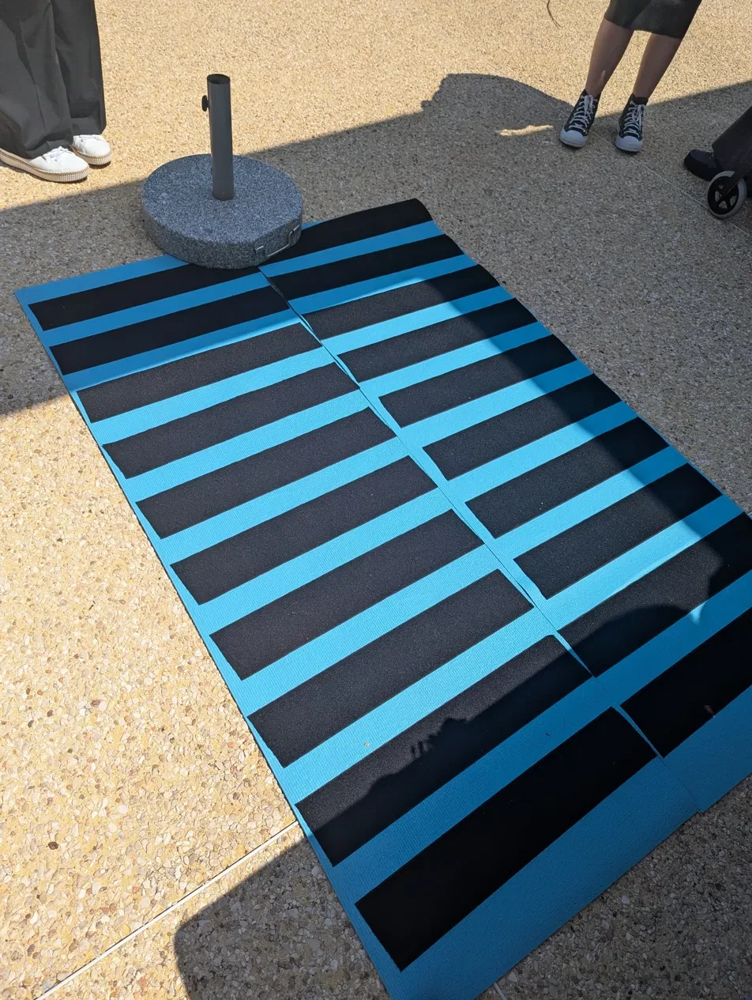
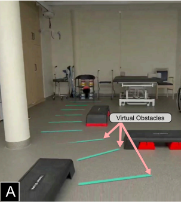
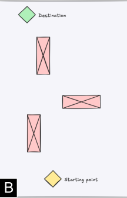

Adaptive AR pathfinding for Parkinson's disease
A Meta Quest 3 system that lets people with Parkinson's point at where they want to go, then lays a walking path across their home's floor, avoiding every obstacle and furniture.

- Role
- Research, interaction design, prototype, evaluation
- Context
- Télécom Paris — IP Paris, advised by Daniel Medeiros
- Timeline
- Four months in 2025 — survey in May, presented in October
- Built with
- Meta Quest 3 · Unity · C# · Mixed Reality Utility Kit
- Output
- AR prototype, pilot with five patients, ISMAR poster
Project Summary
Freezing of gait is a common problem for people with Parkinson's disease. It causes people to suddenly freeze while walking, often in doorways or narrow spaces, which can lead to falls and injuries.
External cueing, such as lines on the floor or auditory beats, can help people with Parkinson's initiate movement and overcome freezing episodes.
Existing AR systems for cueing require the route to be pre-authored by a researcher, which does not allow patients to choose their own destinations.
Patients can point at a destination, and the system maps the room, solves a safe route around the furniture, and lays cues on the floor.
01 — The problem
Parkinson's affects gait.
And sometimes it stops it completely.
Typical gait 10 steps
Freezing of gait stops at 2.9 m
Freezing of gait is a common symptom of Parkinson's disease, it can lead to falls and injuries.
02 — Why a cue works
Planning movement
The basal ganglia are responsible for coordinating movement. They receive signals from the brain about what movement is intended, and then send signals to the muscles to execute that movement.
for people with Parkinson's, the internal route from intention to movement is broken, that's why they freeze.
External cues provide an alternative route that bypasses the basal ganglia, allowing them to initiate movement.

03 — The gap
The gap in research
Existing research tested the effectiveness of AR cues, it was found to be as effective as physical cues and patients respond well to them.
However, the research was limited to pre-authored routes, which does not allow patients to choose their own destinations.
The route is authored first. The destination is fixed before the session starts and stays fixed. The patient adapts their walking to the plan.
An adaptive system that allows patients to choose their own destinations and generates a safe route in real time. In their own home and environment.
The gap in research is user autonomy.
04 — Research
Getting to know my users
I sent a short French survey about walking and freezing to France Parkinson. The manager I reached there has Parkinson's herself. She answered it, then forwarded it through her network. Twelve people replied.
12 responses · France Parkinson network · May–June 2025

58%7 of 12
Where it happens
Thirteen triggers, three families
Participants were asked to list the triggers that cause freezing. They fell into three categories: terrain, body and mind.
6of 13
Terrain
- doorways
- stairs
- obstacles
- kerbs
- uneven stone
- narrow passages
The headset can see all six. They are geometry, and geometry is the one thing a depth map has before the wearer does.
4of 13
Body
- standing still too long
- cold
- fatigue
- the OFF hours between doses
It can see one of the four. Standing still is a pose a camera can read. Cold, fatigue and a dose wearing off are not — those it would have to be told.
3of 13
Mind
- stress
- being rushed
- being watched
It can see none of the three. The headset cannot detect being rushed or being watched. All it can do is not add to them.
What it means for the design
Anxiety and terrain are the most common triggers, we can reduce anxiety by giving the user a clear path to follow and avoid terrain that is difficult to navigate.
In their words
Everyone had already invented their own cue.
Counting steps. Exaggerating stride. Breathing to a cadence. And the one I keep thinking about: not looking at the obstacle.
« Une respiration cadencée est suffisante. »
Asked what helps them get movingShow translation Hide translation
A paced breath is enough.
« Un rythme régulier sur des morceaux que je prends plaisir à écouter. »
One of the two who said music helpsShow translation Hide translation
A steady beat, on music I actually enjoy listening to.
« Militaire ou scout. »
Asked which music helps them walkShow translation Hide translation
Military or scout marches.
Verbatim responses, translated by me. Only two of twelve said music helped at all.
05 — The real requirement
Patients' opinion on wearing AR glasses
0 of 12 had ever tried VR or AR
0yes 5maybe 7no would wear AR glasses
ease of use discretion lightness
Nobody asked about accuracy or range. What worried them was looking ill in public. The hard part of this project turned out to be the thing on your face.
06 — Fieldwork
Then they invited me to feel it.
France Parkinson runs awareness days where visitors can experience how the disease can affect their daily lives. One of the stations was about freezing of gait, and I was invited to try it out !



It was indeed a difficult short path to walk, and parkison's patients have to live with this difficulty every day.
07 — The build
Point at where you want to go.
It runs on a Quest 3. You point at where you want to go, and the headset lays a path for you avoiding obstacles.
-
The room mesh
Meta's Mixed Reality Utility Kit scans the room once, and the headset builds a mesh of the floor and furniture.
-
Your point
You aim the controller anywhere in space. That spot becomes the destination, and you can move it whenever you want.
-
The floor answers
Unity's NavMesh finds a way around the furniture. The headset draws a line of bars along the path. Those are the visual cues that helps patients walk without freezing.
08 — Pilot
Five people, in a room with real furniture in it.
A 5 × 5 m physiotherapy room, a chair at the far end, and furniture placed to get in the way. Everyone walked it three times: with no help, then with a path fixed in advance, then with the interactive one. Same order every time, so I could separate what the walk costs alone, what a path adds, and what choosing your own destination adds on top.


- 66 – 84
- age range
- Stage 3
- Hoehn & Yahr, all five
- None
- had used AR before
-
P1
Did not complete
Recently diagnosed with cognitive impairment. Couldn't complete the interactive condition — choosing a destination is itself a cognitive load.
-
P2
Dystonia
One of the three who gained most. The cue gave the first step somewhere to land.
-
P3
Freezing
Freezes at doorways unassisted. Walked the same route with the path on and stopped less.
-
P4
Bradykinetic gait
Crossed the room in 10 steps with guidance where he'd taken 26 without — shuffle to full stride. Said knowing where the path went reduced his anxiety about the obstacles, and he froze less.
-
P5
Uses a walker daily
Gained almost nothing. Her difficulty was in producing the movement at all, so there was nothing for a cue to unlock.
09 — What happened
All five chose their own target.
Every participant picked their own destination and walked to it. That was the point of the study, and it held for all five.
Nobody in the group had used AR before. Pointing at the floor needed one demonstration, and no further explanation.
Walking improved with the path on. The room confirmed what the survey had already suggested: the headset, not the cueing, is what people would refuse.
Two of the five got very little from it, and that is part of the result. Adaptive cueing helps people whose problem is starting movement rather than producing it, and who can hold a destination in mind while walking to it.
Five participants makes this a pilot rather than a trial. I recorded step counts and observations; the measured gait outcomes — step length, velocity, cadence — are in the ISMAR poster.
10 — Honestly
What I'd change.
A Quest 3 weighs about half a kilo and sits on the face of someone who told me, in writing, that they can't stand anything on their nose. Every result here is measured through that. The next version needs to run on light see-through glasses before it is worth testing anywhere outside a lab.
It was enough to change what I built. It is not enough to claim anything about the population, and I've tried not to.
The mesh knows where the doorway is. It doesn't know that someone is watching, or that the person is in an OFF hour. Sensing that is the harder problem, and the mesh can't solve it.
The system was built to work in a person's own home, around their own furniture. So far it has only ever been asked to work in ours.